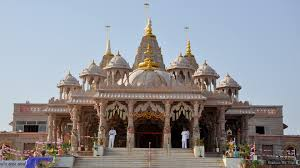
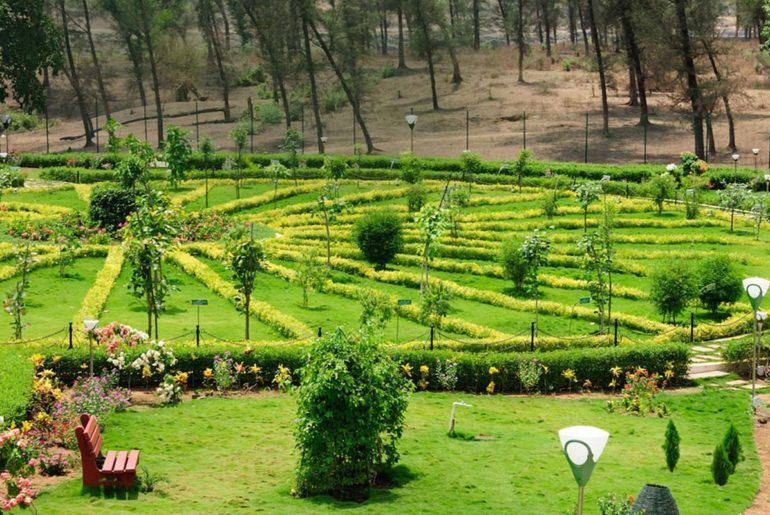
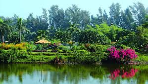

Dadra and Nagar Haveli
Dadra and Nagar Haveli is a union territory in Western India. It is composed of two separate geographical entities: Nagar Haveli, wedged between Maharashtra and Gujarat, and, 1 km to the northwest, the smaller enclave of Dadra, which is surrounded by Gujarat. Silvassa is the capital of Dadra and Nagar Haveli. Unlike the surrounding areas, this was ruled by the Portuguese from 1783 until the mid-20th century.

History
In 1961 when Indian forces took over Goa, Daman and Diu, Badlani was, for one day, designated the Prime Minister of Dadra and Nagar Haveli, so that, as Head of State, he could sign an agreement with the Prime Minister of India, Jawaharlal Nehru, and formally merge Dadra and Nagar Haveli with the Republic of India. The movement for the end of Portuguese rule in Dadra and Nagar Haveli was due to the collaboration of various movements such as the United Front of Goans (UFG), the Organização do Movimento de Libertação Nacional (NMLO), the Rashtriya Swayamsevak Sangh and the Azad Gomantak Dal.[16]
On 31 December 1974 a treaty was signed between India and Portugal on recognition of India's sovereignty over Goa, Daman, Diu, Dadra and Nagar Haveli.

Geography
The area of Dadra and Nagar Haveli is spread over 491 square kilometres (190 sq mi). Its population density is 698 square kilometres (269 sq mi). Though landlocked between Gujarat to the north and Maharashtra to the south, it is close to the western coast of India (between 20°0′ and 20°25′ N latitude and between 72°50′ and 73°15′ E longitude),[2] and the Arabian Sea can be reached via Vapi in Gujarat.
The Union Territory comprises two separate geographical units. The larger part—Nagar Haveli—spans a roughly C-shaped area upriver from the city of Daman on the coast, at the centre of which, straddling the border with Gujarat, is the Madhuban reservoir. The smaller enclave of Dadra is a short distance to the northwest..

Tourism
Tourism of this includes Dense forest, magnificent mountain ranges, serene velleys, stunning ranges of flora and fauna, breathtaking rivers-if this is the packageyou expect on your holiday, head fo rDadra adn Nagar haveli. Your expectations will be more than adequately fulfilled.
Major places to visit in Union Territory of Dadra and Nagar Haveli
- Vanganga Lake Garden
- Hirwa Van Garden
- Dudhni Lake
- Kauncha
- Silvassa Vasona Lion Safari
- Tribal Cultural Museum
- Madhuban Dam
- Binrabin Temple
- Church of our Lady of Piety

Administration
An Administrator administers the territory, which covers an area of 487 km2 and consists of two talukas:
Dadra
Nagar Haveli
Dadra is the headquarters of Dadra taluka, comprising Dadra town and two other villages. Silvassa is the headquarters of Nagar Haveli taluka, comprising Silvassa town and 68 other villages
